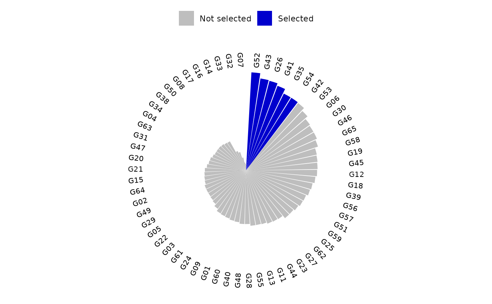
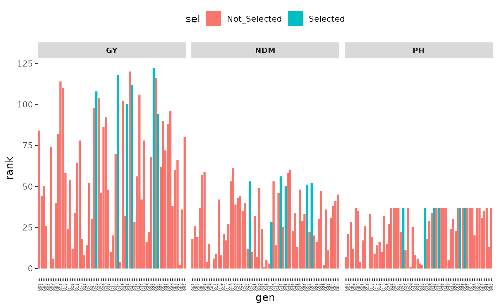

Build plots using the outputs stored in the bpsi object.
Usage
# S3 method for class 'bpsi'
plot(x, ..., category = "BPSI")References
Chagas, J. T. B., Dias, K. O. das G., Quintão Carneiro, V., de Oliveira, L. M. C., Nunes, N. X., Júnior, J. D. P., Carneiro, P. C. S., & Carneiro, J. E. de S. (2025). Bayesian probabilistic selection index in the selection of common bean families. Crop Science, 65(3).doi:10.1002/CSC2.70072
Examples
# \donttest{
mod = bayes_met(data = soy_pat,
gen = "gen",
loc = "env",
repl = NULL,
trait = "PH",
reg = NULL,
year = NULL,
res.het = TRUE,
iter = 2000, cores = 2, chain = 4)
#> Warning: There were 1 divergent transitions after warmup. See
#> https://mc-stan.org/misc/warnings.html#divergent-transitions-after-warmup
#> to find out why this is a problem and how to eliminate them.
#> Warning: Examine the pairs() plot to diagnose sampling problems
mod2 = bayes_met(data = soy_pat,
gen = "gen",
loc = "env",
repl = NULL,
trait = "GY",
reg = NULL,
year = NULL,
res.het = TRUE,
iter = 2000, cores = 2, chain = 4)
#>
#> Warning: Bulk Effective Samples Size (ESS) is too low, indicating posterior means and medians may be unreliable.
#> Running the chains for more iterations may help. See
#> https://mc-stan.org/misc/warnings.html#bulk-ess
mod3 = bayes_met(data = soy_pat,
gen = "gen",
loc = "env",
repl = NULL,
trait = "NDM",
reg = NULL,
year = NULL,
res.het = TRUE,
iter = 2000, cores = 2, chain = 4)
#> Warning: There were 133 divergent transitions after warmup. See
#> https://mc-stan.org/misc/warnings.html#divergent-transitions-after-warmup
#> to find out why this is a problem and how to eliminate them.
#> Warning: Examine the pairs() plot to diagnose sampling problems
#> Warning: Bulk Effective Samples Size (ESS) is too low, indicating posterior means and medians may be unreliable.
#> Running the chains for more iterations may help. See
#> https://mc-stan.org/misc/warnings.html#bulk-ess
#> Warning: Tail Effective Samples Size (ESS) is too low, indicating posterior variances and tail quantiles may be unreliable.
#> Running the chains for more iterations may help. See
#> https://mc-stan.org/misc/warnings.html#tail-ess
models=list(mod,mod2,mod3)
names(models) <- c("PH","GY","NDM")
increase = c(FALSE,TRUE,FALSE)
names(increase) <- names(models)
probs = list()
for (i in names(models)) {
outs <- extr_outs(model = models[[i]],
probs = c(0.05, 0.95),
verbose = TRUE)
probs[[i]] <- prob_sup(
extr = outs,
int = .2,
increase = increase[[i]],
save.df = FALSE,
verbose = TRUE
)
}
#> -> Posterior effects extracted
#> -> Variances extracted
#> -> Maximum posterior values extracted
#> -> Posterior predictive checks computed
#> 1 of 4000 iterations ended with a divergence (0.025%).
#> Try increasing 'adapt_delta' to remove the divergences.
#> 0 of 4000 iterations saturated the maximum tree depth of 10.
#> E-BFMI indicated no pathological behavior.
#> -> Probability of superior performance estimated
#> -> Pairwise probability of superior performance estimated
#> Process completed!
#> -> Posterior effects extracted
#> -> Variances extracted
#> -> Maximum posterior values extracted
#> -> Posterior predictive checks computed
#> 0 of 4000 iterations ended with a divergence.
#> 0 of 4000 iterations saturated the maximum tree depth of 10.
#> E-BFMI indicated no pathological behavior.
#> -> Probability of superior performance estimated
#> -> Pairwise probability of superior performance estimated
#> Process completed!
#> -> Posterior effects extracted
#> -> Variances extracted
#> -> Maximum posterior values extracted
#> -> Posterior predictive checks computed
#> 133 of 4000 iterations ended with a divergence (3.325%).
#> Try increasing 'adapt_delta' to remove the divergences.
#> 0 of 4000 iterations saturated the maximum tree depth of 10.
#> E-BFMI indicated no pathological behavior.
#> -> Probability of superior performance estimated
#> -> Pairwise probability of superior performance estimated
#> Process completed!
index = bpsi(
problist = probs,
increase = increase,
int = 0.1,
lambda = c(1, 2, 1),
save.df = FALSE
)
plot(index, category = "BPSI")

plot(index, category = "Ranks")

# }